My first plush memory is a light brown bear from Build-A-Bear, adorned with pastel purple bows—she was absolutely the cutest. Over the years, I’ve been gifted several sheep plushies, and a few years ago, I picked up the classic Pokémon plushes from Target: Bulbasaur, Charmander, Pikachu, and Squirtle. More recently, I’ve fallen for keychain plushes, adding little favorites to my growing collection. Plush collectors often fall in love with the adorable designs, beloved characters, and the simple comfort these cuddly companions bring.
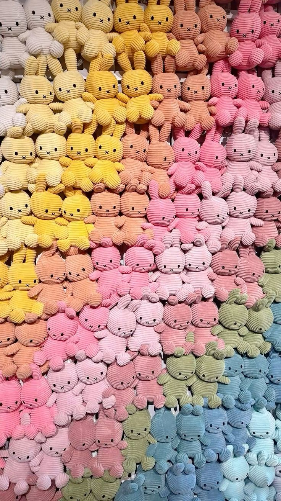
───୨Plush Types
Plush come in all different shapes and styles. You've got the standard plush you can have on your bed or displayed on a shelf. There's mini plush/ keychain plush. You can attach keyrings to them and hang the plush on bags, purses, wallets, etc. In addition to this, there's also bean bag plush, pillow variants, crocheted, and so much more.
- Standard plush
- Mini plush / keychain plush
- Beanbag plush (beanies)
- Pillow plush / squish plush
- Handcrafted plush (sewn or crocheted)
- Mascot plush
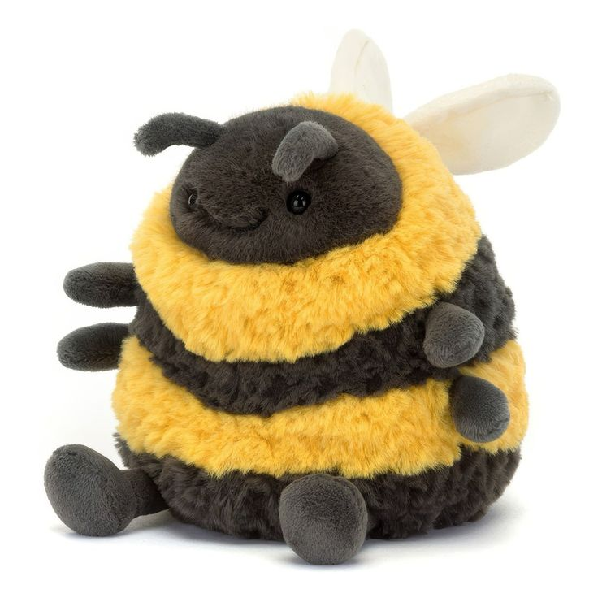
Standard
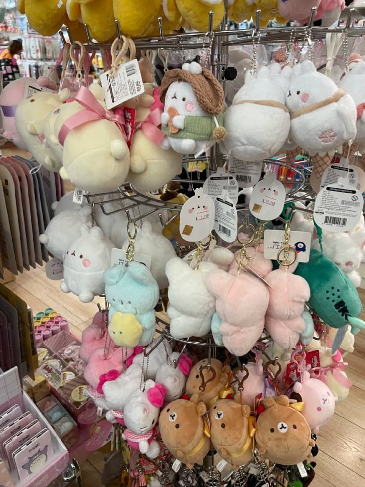
Mini/Keychain
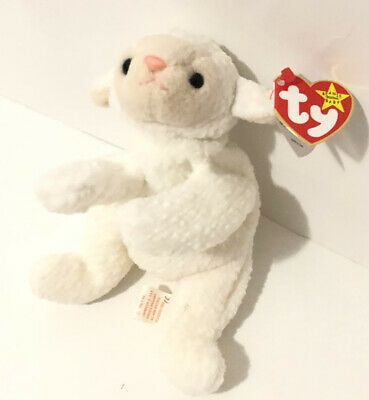
Beanbag
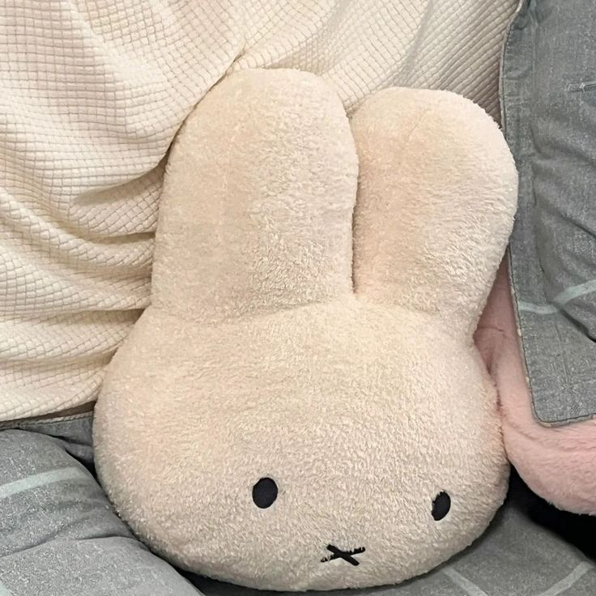
Pillow
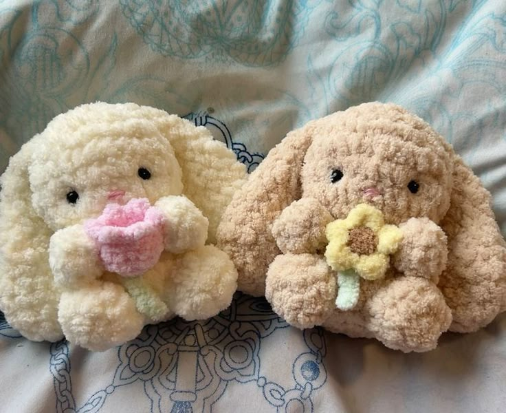
Crocheted
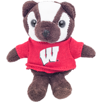
Mascot
───୨ৎCharacters/Brands─
Many collectors love plush tied to a brand, show, or artist. Recognizing the creators or licensed characters makes it easier to organize and expand a collection:
- Sanrio (Hello Kitty, Cinnamoroll, My Melody)
- San-X (Rilakkuma, Sumikko Gurashi)
- Amuse (Alpaca, Pote Usa Loppy)
- Ty Beanie Babies
- Jellycat
- Pokémon Center plush
- Miffy
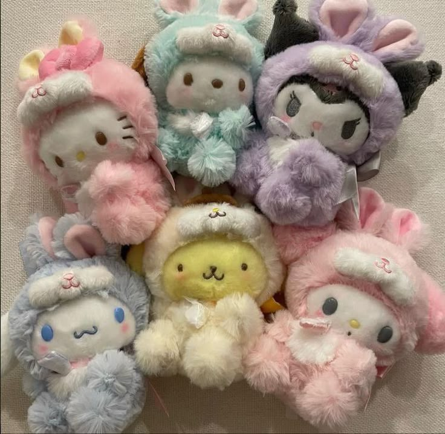
Sanrio
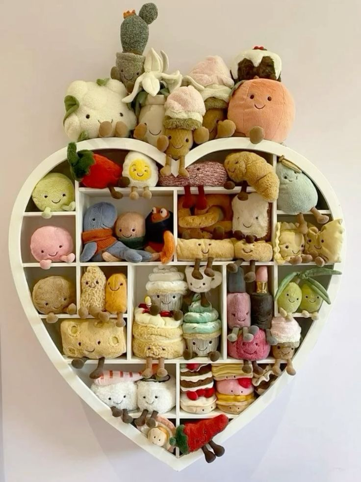
Jellycat
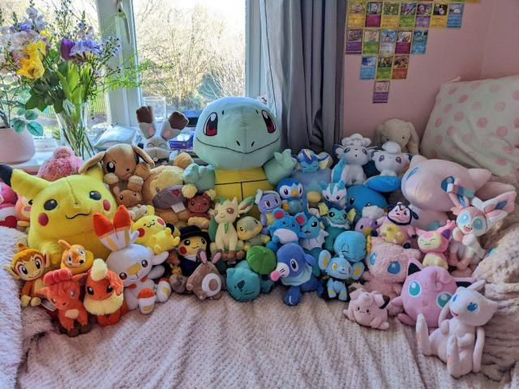
Pokemon
───୨ৎThemes─
- Animals (cats, bunnies, bears, frogs, dinosaurs, cows)
- Fantasy creatures (dragons, fairies, mermaids)
- Food plush (boba, fruit, bread, desserts)
- Characters (anime, games, mascots)
- Seasonal plush (Halloween, Christmas, Valentine’s)
- Cottagecore / nature-themed
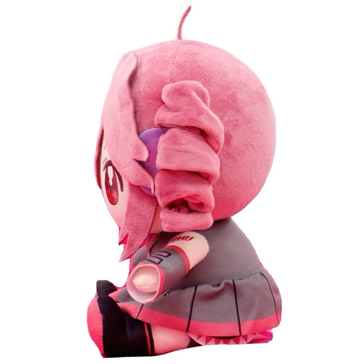
Teto
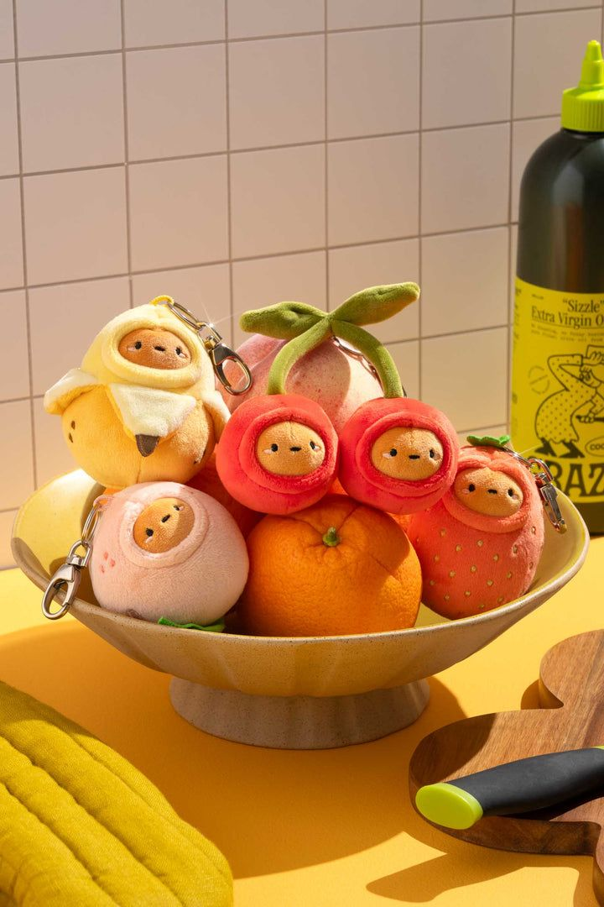
Food Plush
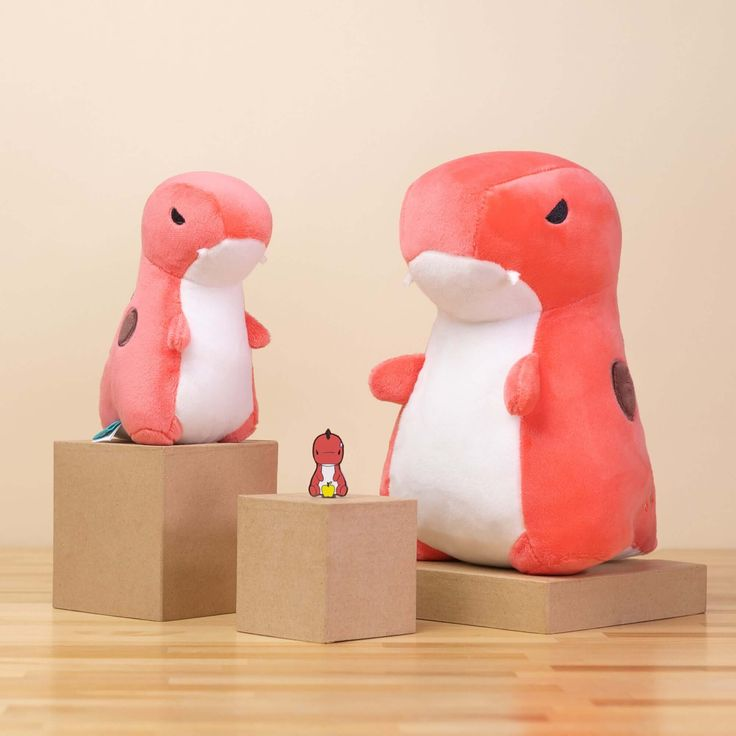
Bellzi Rexxi
───୨ৎMaterials─
- Minky
- Sherpa / fleece
- Knitted / crocheted yarn
- Felt
- Faux fur
- Weighted plush (microbeads)
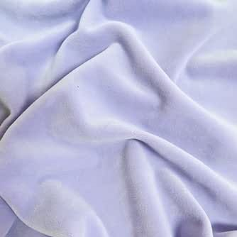
Minky
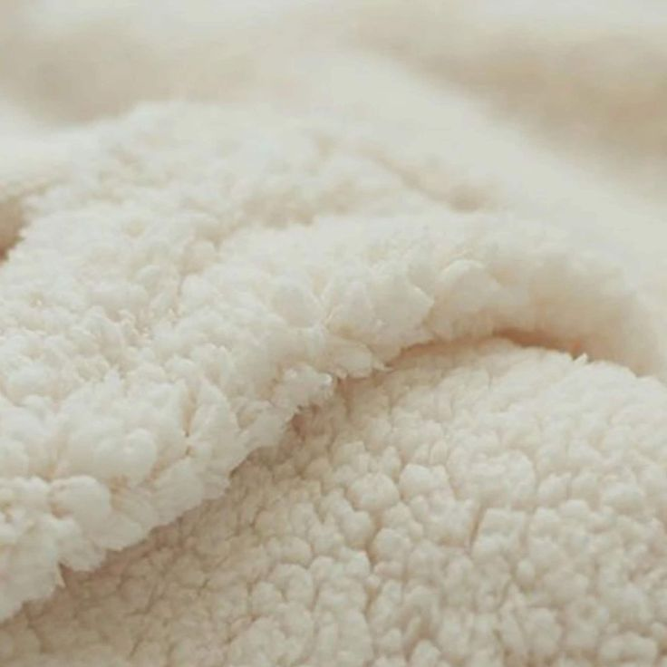
Sherpa
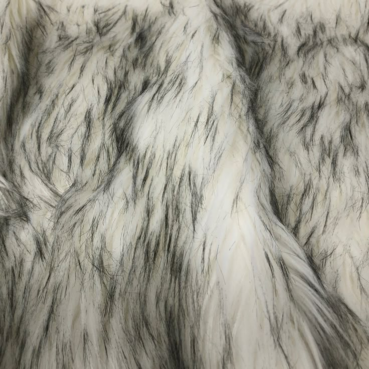
Faux Fur
───୨ৎCare─
To care for your plushies, you first want to look at the tags for instructions. Many recommend to spot test a small amount with some mild detergent or soap. This is just in case the color may bleed. If they're machine washable, I use a zip-up silk pillowcase for mine. This keeps the plush from the friction of the wash. I choose a gentle cycle, cold water, and a more gentle detergent. I accidentally washed my pikachu in my deep navy blue pillowcase and he kinda turned a bit green. Condolences to this pikachu. After washing, I toss in the dryer. Some plush can't be washed because of the material. Maybe the stuffing isn't machine safe or it has wire or hard parts. It's safer to spot clean with the same solutions you'd use for the washing machine. Except, a bit more diluted. I prefer storing my lighter color plush on shelves so they can retain their colors. I attach more of the bold and darker colors to my purses as their colors won't be affected by the outside conditions.
- Regularly brush the surface to prevent dust build-up (could also store in acrylic case)
- Storing away from sun in a cool, dry place prevents color from fading
- Plush must always dry completely to prevent mold/mildew
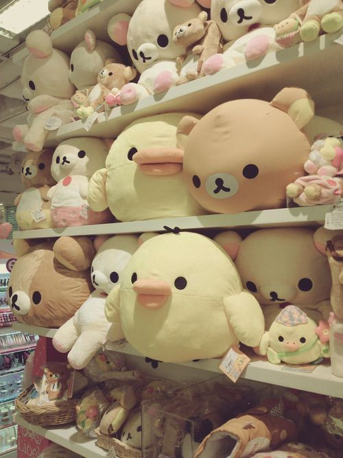